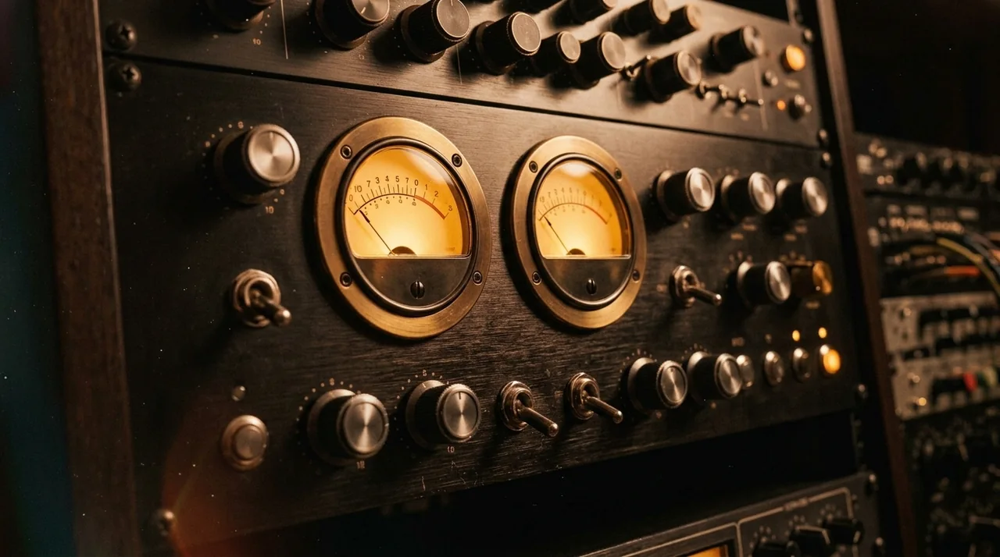
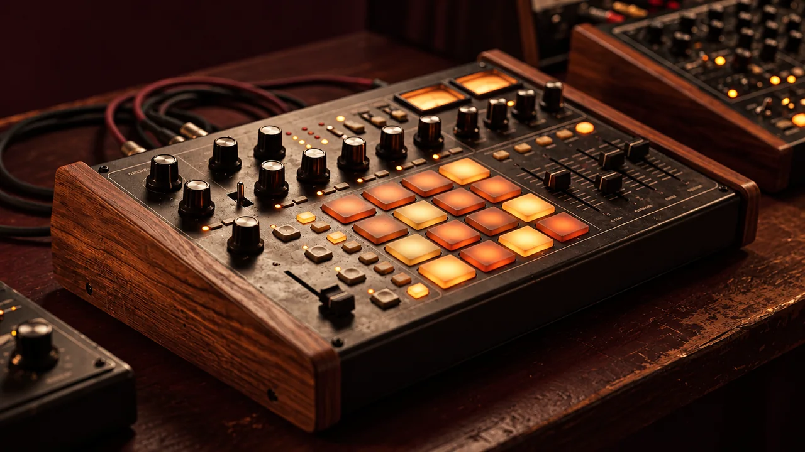

First time mixing? Try three guided practices →
WALAMORT · HEAR WHAT YOU CHANGE
Your sound.
Your experiment.

A workbench for mixing, understanding effects and making listening decisions. Start with our original loop or import your own excerpt.
Start at low volume. No autoplay or file upload. Microphone only when activated. Instrument samples, synthesis and effects for experimentation. Each mode explains its capabilities and limits beside its controls.
Your settings history
Keyboard: Ctrl/Cmd + Z to undo, Ctrl/Cmd + Shift + Z to redo; Ctrl + Y also redoes. Shortcuts work when focus is inside the laboratory, outside input fields and editable text. They do not intercept text editing, search fields or the browser interface.
Undo or redo up to 20 recent changes to settings, patterns and arrangement in this tab. Consecutive movements of the same slider less than half a second apart count as one change. Restoring stops playback. Changing the source audio, trimming, applying a montage, importing settings JSON or restoring defaults resets history. Audio, region edits, the listening monitor and the dry/processed A/B position are not restored. History is cleared when this page reloads; download your JSON project to keep settings.
A manual return point
Keep one independent copy of settings, patterns and arrangement while this tab stays open. Saving again replaces the previous point. Restore stops playback and can itself be undone. Source audio changes, trimming, montage application, settings JSON import, default reset or reloading clear the point. Audio, region edits, A/B position and monitoring mode are not included. Download a JSON project for a lasting copy.
Tap tempo
Tap at least three times at a steady pulse. Use Enter or Space with the tap button focused. After a pause of 2.5 seconds a new measurement begins. This measures your taps, not an audio file.
Apply stops playback and changes project tempo within 45–180 BPM. Imported audio is not time-stretched. An estimate can reflect half or double the musical tempo.
Delay times at your tempo
A quarter note lasts 60,000 ÷ BPM milliseconds. An eighth note is half as long; a dotted eighth is three quarters; an eighth-note triplet is one third.
| Figure | Time | Apply |
|---|---|---|
| Quarter note | — | |
| Eighth note | — | |
| Dotted eighth | — | |
| Eighth-note triplet | — |
Selecting a subdivision stops playback and changes only delay sync. It does not enable the effect or alter mix, feedback or project BPM. Enable delay in the rack and raise its mix to hear it. Imported audio uses project BPM as a reference; its tempo is not detected.
Find a laboratory tool
Go straight to the control you need. Opening a tool does not start audio or activate your microphone.
- Undo and redo settingsRestore up to 20 changes in this session.
- Delay timing tableCalculate note durations in milliseconds and sync the echo.
- Tap tempoTap the pulse and apply its BPM to the backing.
- Instruments and backingChoose banks, chords and backing style.
- Grooves and sequencerTwelve grooves and an editable drum grid.
- Drum favouritesSave patterns and apply them globally or to a section.
- Compare variationsRestore the previous pattern or its latest variation.
- Section arrangementArrange intro, verse, chorus and outro.
- Import compositionBring creative-studio JSON into the laboratory.
- Record microphoneRecord a sample when you activate the microphone.
- Trim audioSelect an excerpt from a file or recording.
- Region montageOrder excerpts and save the montage.
- Effects rackEQ, compression, delay and reverb.
- Advanced controlsFilters, frequency/Q, saturation and stereo width.
- Match A/B listening levelCompare versions with RMS listening compensation.
- Mono and stereo monitorMonitor mono, isolated channels or side signal.
- Binaural and 5.1 distributionHRTF positions and multichannel export.
- Full multitrack MIDIExport bass, chord, drum and composition notes.
- Drum-only MIDIDownload one pattern or arrangement drums.
- Separate WAV stemsTake dry instrument stems into your DAW.
- WAV and JSON projectRender the mix or save its settings.
No matching laboratory tool. Try another word or search all Walamort.
1. Your source material
Original Walamort loop: drums, bass and arpeggio; four bars in C major, C-Am-F-G.
Changing tempo or timbre stops the loop for rebuilding; press play again.
Select up to 12 seconds anywhere in the file; loops without time stretching. Format support depends on the browser. Files remain on this device.
SAMPLE BANK & BACKING TRACK
Choose instruments and edit the accompaniment
Only needed notes download on play or render. Pitches without an individual take use the nearest sample; registers adapt by octaves. Each bank has one articulation/layer, not a multi-velocity capture of each instrument.
Select your audio excerpt
Original stays available while this page is open. Select 0.1–12 seconds within a file up to 60 seconds. Click the waveform for start; Shift-click for end. Number fields provide equivalent keyboard selection. Applied excerpt is used by the exercise; JSON stores neither audio nor selection.
Region montage
Add the selection from the editor above, duplicate and order up to eight regions. They are concatenated into one track of up to 12 seconds; each region keeps the original channels and supports level and fades.
Save and restore this montage
Keep the original audio file alongside the project. Open the JSON and import that audio in either order; recovery checks file contents, not just the name. No sound is embedded and no playback starts automatically. The project stores region order, bounds, levels, fades and laboratory settings; A/B position and listening compensation are not saved. For recordings, download the audio and import that saved file before saving a project.
Edits retain the original while this page is open. The list is pending until you press “Use montage”. The general settings JSON does not store audio or regions; use the montage project to keep the list. There is no overlap, file mixing or automatic tempo matching.
Editor budget: source PCM up to 48 MiB; estimated work up to 64 MiB for source, active clip, montage and one WAV. Decoding and the browser may use additional memory.
FROM IDEA TO MIX
Produce your composition
Import a creative-studio JSON or send it from there. Preserves 16 positions, rests, chords, sevenths, inversions and original tempo (45–160 BPM). Melody and chords share one track; this is not generic MIDI import.
Download an original example JSON
Transfer stays in this browser and expires after 24 hours. Save settings as JSON before applying; a session snapshot preserves previous settings in this tab. Sample-bank instruments may change the sound character.
SONG STRUCTURE
Build a section arrangement
Create up to four sections and 16 bars total. Each repeat takes four bars. The four chords above are used as a starting point when adding sections. Instruments, tempo, key and effects are global; each section keeps its own chords, groove, intensity and tracks.
Playback and export follow top-to-bottom order; playback loops back to the beginning. Arrangement edits stop audio. JSON includes the structure; recordings must be reimported. A file in complete-clip mode does not use this arrangement. No automation or tempo changes.

Grooves and sequencer
The grid edits the global pattern. Sections with their own groove use that preset instead of this grid.
A 16-step bar repeats over four bars of harmony. Each group of four steps is one beat. Click a cell to cycle silence, soft hit and strong hit.
My drum favourites
Keep up to 20 named patterns in this browser. Save your selected previous pattern or variation, then reuse it in another session.
Choose a section to store an independent copy of the favourite grid and swing in the project, WAV stems and full-arrangement drum MIDI. Section copies keep working if the favourite is removed. Section tempo stays global. In the arrangement’s Groove selector, choose a preset or the global pattern to replace the copy.
Stores the global grid, groove, swing, seed and reference tempo; no audio, effects, chords or arrangement. Applying stops playback and preserves current settings except those rhythm fields and optional tempo. When applying globally, sections with independent grooves stay unchanged. Imports merge collections and keep existing patterns when names match. A new save or import clears removal undo. Download a backup before clearing browser data or switching devices. This is local storage, not an online account; the main and test paths share this collection when opened on the same domain.
Compare your last drum variation
Create a drum-only variation to enable comparison.
Keeps the previous pattern and its variation in this tab only. Selecting either stops playback and restores that pattern and seed; current chords, tempo, effects and arrangement stay as they are. Press Play to listen. JSON exports the selected version. Another variation replaces this pair; editing the grid, changing groove or seed clears it. Arrangement sections with their own grooves do not use this global pattern.
Original patterns inspired by general features of these styles, not their full diversity. Editing pattern, groove or swing stops playback to rebuild the loop.
Your sound: record or turn a file into an instrument
The file input is above. Use the excerpt as a complete clip or as a tuned note for the accompaniment. Recording requests microphone permission; there is no monitoring or upload.
Set the actual pitch of the recorded note; it is not detected or corrected automatically. JSON saves settings, not files or recordings. Keep your originals.
2. Balance the tracks
These controls affect the synthesized stems. They are disabled for your file, which arrives as one mixed track.
3. Explore the rack
Advanced mode · filters, parametric EQ, saturation and stereo
Open this rack to isolate frequencies, add harmonics or check stereo. These effects process the mix bus, not each stem separately.
See what the effect does
EQ / HP / LP
Compression
Saturation
Delay
4. Compare and observe
A bypasses filters, EQ, saturation, compression and sends; B processes them. Both retain track balance, width, pan, output and final protection. Use the optional RMS listening compensation below and compare carefully; it does not measure perceptual loudness.
A/B with listening level compensation
Measure the same first eight seconds of A and B offline. RMS measures effective sample amplitude; it is not LUFS, true peak or perceptual loudness. Only the louder version is attenuated, by up to 18 dB; neither version is boosted.
Measurement stops playback and locks controls briefly. A short clip repeats within the eight-second window. Changing source, trim, montage or settings invalidates the result. Echo accumulation and other sections can differ. Listening compensation is not included in WAV exports or JSON; exports keep their existing levels. Source PCM for measurement is limited to 20 MiB; source decoding and rendering can use additional memory.
Stopped
Peak and RMS measure output samples, not LUFS or true peak. Final protection uses a second compressor; it does not guarantee the absence of intersample peaks.
Mix monitor
Listening only: WAV exports, separate stems, 5.1 files, RMS measurements and saved projects keep their original mix. Left, right and side are played through both speakers. Return to stereo after checking.
What should I listen for?
Start in stereo, then switch to mono at a comfortable volume. If a voice or instrument loses strength, review stereo width, delays and phase relationships. Compare left and right to find channel differences. Side isolates the difference between channels; a centred mono source cancels here. These modes are diagnostic tools, not an automatic quality score or an Atmos renderer.
Spatial listening and 5.1 delivery
HRTF positions sources around a virtual head. Use headphones, width 1 and centered master pan as a reference. This is a generic HRTF without head tracking, not Dolby Atmos. Changing mode stops playback.
Export 5.1 PCM distribution · advanced
Real six-channel WAV: FL, FR, FC, LFE, SL, SR. Uses positions, levels, mute and solo. This delivery is dry: no global rack, width, stereo pan, HRTF or elevation. LFE only receives an 80 Hz low-passed send from bass (or file).
Download 5.1 WAVAttenuation is applied only if peak exceeds 0.98 to prevent digital clipping. This is not loudness normalization or cinema-room validation. Review in a DAW with suitable routing and speakers. No ADM, object metadata or Dolby Atmos is generated.
Dolby Atmos Renderer · requirements for that professional workflow
5. Save the experiment
Before exporting
Estimate for the mix WAV button below, not stems, MIDI or 5.1 files. The existing render reserves four seconds beyond the source; echoes may still be truncated. The imported clip is measured in seconds, without tempo detection or time-stretch. No audio is loaded or played to calculate these values.
WAV includes one pass, around four extra seconds of tail and current A/B/output settings: 16-bit PCM stereo at 44.1 kHz. A lingering echo may be truncated; no automatic normalization.
Settings persist locally; JSON excludes imported/recorded audio and A/B position. Importing JSON restores the original loop. A WAV rendered from your file contains its processed audio: share only material you may use.
Continue mixing in your DAW
Full accompaniment as multitrack MIDI
One editable MIDI file with bass, chords and drums in separate tracks, plus tempo and section markers. Keeps section rests, intensity, custom drum copies and their swing. Imported creative projects split melody and chords into separate tracks. Like dry stems, exports ignore global volume, mute/solo and effects. No audio or sample banks are embedded; GM program hints may sound different in your DAW. Imported mixed clips cannot be converted here.
Editing notes in your DAW
Format 1, 480 ticks per quarter note, 4/4, with a tempo/markers track. Drums use channel 10. Other tracks use separate channels and reference GM programs. Repeated notes of the same pitch on one track close before the next attack to avoid overlapping note-offs; melody and chords stay separate in creative projects. Choose whether your DAW adopts the file tempo and assign its instruments. Audio recordings and effects require WAV export instead.
Edit these drums in your DAW
Exports notes, tempo, swing and accents, without audio or rack effects. The global option repeats no sections; the full arrangement keeps section grooves, repeats, drum rests and intensity. Like dry stems, it ignores global volume, mute and solo. The selected before/after pattern is used wherever a section inherits it. A mixed audio file cannot be converted into MIDI here.
Drum mapping and import
Import the .mid into a drum instrument track. MIDI channel 10: kick 36, acoustic snare 38, closed hi-hat 42 and percussion mapped to claves 75. Soft/strong hits use velocities 50/100 before section intensity. Your kit may require note remapping and will sound different from the laboratory. Files contain 4/4 and tempo metadata; choose whether your DAW should adopt that tempo. Full-arrangement export follows the composition drum toggle when a composition is active. No MIDI device permission is requested.
Exports mono drums, stereo bass and stereo chords, including section rests and intensity. These dry stems are before the mixer: global levels, mute/solo, panning, rack, HRTF and final protection do not apply. No normalization. A mixed file cannot be separated into instruments. Keep sample credits when sharing.
Three guided experiments
- EQ: leave only the arpeggio, cut highs by 8 dB and compare A/B. Describe more than “better”.
- Dynamics: select strong compression, listen to drums and vary attack from 0.005 to 0.050 s. Observe reduction, lower output if louder, then compare.
- Space: set delay send to 20%, feedback to 25% and reverb to 15%. Remove one at a time. Which makes the rhythm clearer or less clear?
Production method: free Spanish PDF sample → · Ask about production lessons →
Technical reference: W3C · Web Audio API.